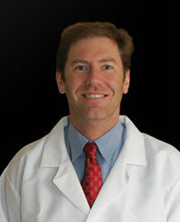

Dr Myers

Dr. Thomas H. Myers is a board certified orthopaedic surgeon and sports medicine expert. He moved to Atlanta to practice in 2003 after completing a year long fellowship with world-renowned orthopaedic surgeon Dr. James Andrews. While training with Dr. Andrews, Dr. Myers assisted in the care of marquis athletes from all areas of professional and college sports. He served as an associate team physician for the Washington Redskins NFL football team as well as NCAA Division I athletic teams from Alabama. He participated in spring training coverage for the Tampa Bay Devil Rays and the Cincinnati Reds of major league baseball.
Prior to his sports medicine training Dr. Myers completed a residency in orthopaedic surgery at Harvard Medical School which is one of the top orthopaedic programs in the country. While in residency, Dr. Myers assisted with care of athletes from the New England Patriots and Harvard athletic programs.
Dr. Myers has been a practicing physician since 1996 after graduating from medical school at the Johns Hopkins University School of Medicine. Johns Hopkins is the number one medical school in the nation and boasts the best Hospital in the country.
After arriving in Atlanta, Dr. Myers joined a small group practice and was an assistant team physician for the Atlanta Falcons as well as the Atlanta Thrashers hockey club. In May of 2008 he founded Myers Sports Medicine and Orthopaedic Center and has focused his practice on caring for athletes of all ages.
His expertise includes ACL reconstructions, arthroscopic knee and shoulder procedures, joint replacement and rotator cuff surgery. In particular he has published literature and lectured both nationally and internationally on cartilage repair and replacement in the knee. These joint preserving procedures represent the cutting edge in orthopaedic surgery today.